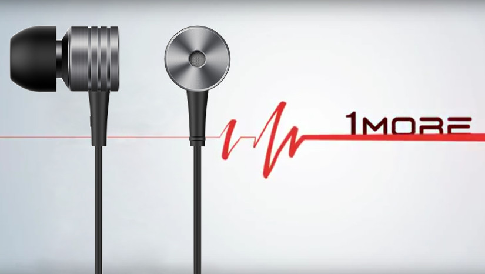

5 последних товаров блога gadjet-revu.blogspot.ru
Перейти на главную страницуЖенская сумка через плечо Этнический стиль Split кожа

Форма flap - небольшая сумка-конверт с откидывающимся клапаном, украшенная крупной застёжкой, на ремешке-цепочке. Самая известная модель такой формы - Chalel 2.55,та самая на ремешке-цепочке, произведена в 1955 году. Придумала ее дизайн Коко Шанель по своим детским воспоминаниям. Детство ее прошло в приюте при монастыре, а там монахини носили ключи на длинных цепочках, прикрепленных к поясу. В 80-е годы Карл Лагерфельд, дизайнер дома Шанель, внес свой вклад в дизайн этой сумочки. Скромная небольшая застежка была заменена на крупную, с монограммой в виде переплетенных букв "С".
Больше информации можно найти здесь:
Ugreen Qualcomm Быстрая зарядка 3.0 Зарядное устройство на 4 USB-порта

Все знают и без конца с этим сталкиваются, что ёмкости аккумуляторных батарей не хватает для длительной работы гаджетов. Как зарядить батарею быстро и не повредить? На помощь пришла компания Qualcomm с технологиями Quick Charge первой, затем второй версии. Сейчас уже Quick Charge 3.0 и с функциями быстрой зарядки справляется гораздо эффективнее, заряжает мобильное устройство на 80% за 35 минут. Особое внимание в этой версии было обращено на защиту аккумулятора от перегрева.
Больше информации можно найти здесь:
Классические наушники 1 MORE Piston. Возрождение легенды
Компания 1 More решила возродить легендарные наушники Xiaomi Piston 2 под собственным брендом и со своими доработками, которые сделали эти наушники еще лучше.
Со всеми жанрами - классическая и инструментальная, рок, рэп, тяжелый металл, блюз ... - наушники 1More Piston Classic справились достойно!
Больше информации можно найти здесь: